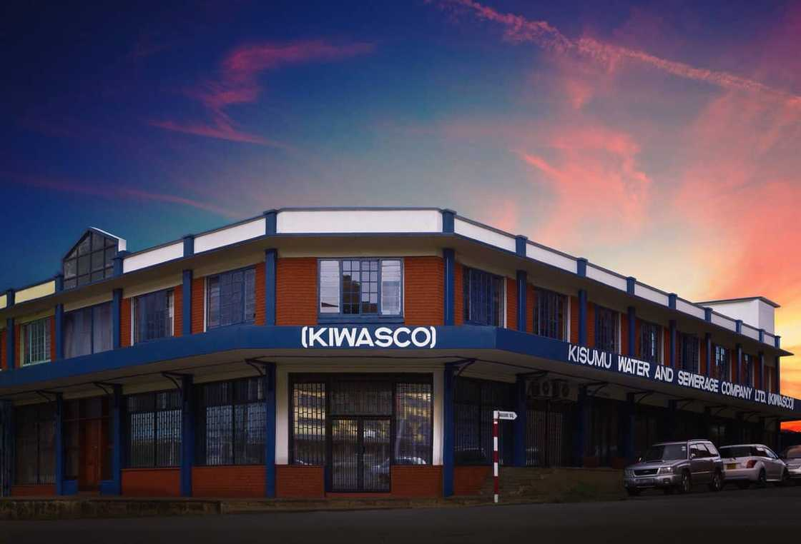

THE VISION
A Connected, Skilled, Healthy and Enterprise-Ready Kisumu West
A long-term development direction grounded in evidence, shaped by community voices, and built through partnership. Not a list of promises — a framework for sustained progress within the institutions and responsibilities that govern our constituency.
Why This Vision, Why Now
Kisumu West sits at a crossroads of real opportunity and documented challenge. A credible vision must acknowledge both — and chart a pathway that is honest about what an MP can do, what requires county and national collaboration, and where community partnership makes the difference.
The Kisumu County Integrated Development Plan (CIDP) 2023–2027 identifies persistent development pressures across the county: inadequate water infrastructure, sanitation challenges, health-system capacity constraints, mobility and road-network needs, and the broader task of building economic resilience in communities that depend on agriculture, fishing and local enterprise.
These are not abstract policy categories. They are lived realities for residents of Kisumu West — in the households that travel for safe water, in the clinics that operate without consistent supplies, in the roads that limit market access, in the young people whose skills do not yet connect to opportunity.
At the same time, Kisumu West has significant assets: agricultural activity, fishing, human talent, educational institutions, sports, entrepreneurship, community organisations, and a strategic position within the wider Kisumu economy. The vision does not start from zero. It starts from what exists — and seeks to connect it more effectively.
Constitutionally, the National Assembly's core functions under Article 95 of the Constitution of Kenya include representation, legislation, deliberation, appropriation and oversight. An MP cannot personally deliver county health services, county water services or county roads — those are county government responsibilities. What an MP can do is represent, advocate, legislate, oversee, convene partnerships, monitor progress, and ensure that the voices of Kisumu West are heard where decisions are made.
This vision is built on that distinction. It is institutionally honest. It is evidence-informed. And it is designed to be a framework that residents, partners and institutions can hold us to — not a collection of promises that cannot be kept.
Kisumu West Has Assets to Build On
Before we speak of challenges, we must name what already exists. These are the strengths — documented, visible, and real — that form the foundation of any credible development pathway.
Agriculture & Fishing
Active agricultural production and fishing communities form a significant part of the local economy and livelihood base.
Educational Institutions
Schools, colleges and training institutions that develop human capital and anchor community life.
Sports & Talent
A documented area of local potential, with young people whose talent deserves structured pathways.
Entrepreneurship
Local businesses, MSMEs and traders who form the backbone of the constituency economy.
Community Organisations
Women's groups, youth groups, faith-based organisations and civil society structures already active on the ground.
Strategic Connectivity
Position within the wider Kisumu economy and proximity to regional infrastructure and markets.
Education, Skills & Youth Opportunity
From education → to skills → to opportunity.
A skilled population is the foundation of any development pathway. The vision for human capital is not a single intervention but a connected chain: quality education leading to relevant skills, leading to real opportunities in work, enterprise and further learning.
This means advocating for improved education access and school infrastructure where appropriate, supporting vocational and digital skills training, creating pathways for apprenticeships and career development, and recognising that sports, creative talent and technical ability are all part of the same ecosystem.
An MP does not run schools or training institutions. But an MP can advocate, convene partnerships between training providers and employers, oversee the quality of public investment in education, and ensure that young people in Kisumu West are not invisible in national skills and opportunity programmes.
The goal is not to promise employment — that is not within any single office to deliver. The goal is to ensure that every young person has a credible pathway from learning to livelihood.
Focus Areas
- Education access and school infrastructure advocacy
- Vocational and digital skills development
- Apprenticeships and career pathways
- Talent development in sports and creative industries
- Partnerships between training institutions and employers
- Youth enterprise and entrepreneurship support

Healthy Communities, Stronger Households
Access · Infrastructure · Prevention · Partnership
Health is foundational. A constituency where households cannot access quality healthcare, where clinics operate without consistent supplies, where maternal and child health services are stretched, is a constituency where every other development goal is harder to reach.
The Kisumu County CIDP identifies inadequate health infrastructure, health products, technologies and human resources among the sector's challenges. These are county government responsibilities — an MP does not deliver health services directly.
What an MP can do is advocate for fair resource allocation to health facilities in Kisumu West, exercise parliamentary oversight over health-sector performance, convene partnerships between public health institutions, civil society and development partners, and amplify community voices on the quality and accessibility of care.
The vision is of healthy communities supported by strong public health institutions, preventive healthcare, and partnerships that extend the reach of the system to every ward.
Focus Areas
- Advocacy for health infrastructure and supplies
- Maternal and child health programmes
- Community health and preventive care
- Partnerships with health institutions and NGOs
- Parliamentary oversight of health-sector delivery
- Health awareness and public education

Essential Services That Protect Dignity
Safe water · Sanitation · Environmental protection · Climate resilience
Access to safe water and sanitation is not a luxury — it is the foundation of health, dignity and economic activity. The Kisumu County CIDP specifically identifies inadequate water infrastructure, weak water governance, climate impacts and inadequate sanitation infrastructure as priority challenges.
Water services are a county government function. An MP does not operate water boards or sanitation departments. But an MP can advocate for fair allocation of water infrastructure investment to Kisumu West, oversee the performance of water service providers, convene partnerships for protection of water sources, and support community-led environmental and climate resilience initiatives.
The vision is of communities where households do not travel for safe water, where sanitation infrastructure protects public health, where water sources are protected, and where climate resilience is built into every development decision.
Focus Areas
- Advocacy for water infrastructure investment
- Sanitation infrastructure and services
- Protection of water sources
- Drainage and flood resilience where relevant
- Climate adaptation and environmental protection
- Community participation in water governance

From Local Talent to Local Opportunity
Finance → Skills → Markets → Technology → Networks
The local economy of Kisumu West is built by its entrepreneurs — in markets, farms, fishing enterprises, shops, workshops and small businesses. The vision for enterprise is not to promise specific funding amounts or job numbers, which no single office can credibly guarantee.
The vision is to build a framework that helps existing entrepreneurs connect to the five things they need most: finance, skills, markets, technology and networks. This means convening partnerships with financial institutions, advocating for MSME-friendly policies, supporting cooperatives and women-owned enterprises, and strengthening the connection between local producers and wider markets.
An MP can legislate, advocate and convene. An MP can ensure that national enterprise development programmes reach Kisumu West. An MP can partner with the private sector, development partners and civil society to create an environment where local enterprise can grow.
Focus Areas
- MSME and small business support frameworks
- Access to finance and enterprise development
- Market access and local value chains
- Cooperatives and women-owned enterprises
- Youth enterprise and digital commerce
- Partnerships with private sector and development partners

Connecting People to Opportunity
Roads · Transport · Digital · Energy · Public infrastructure
Connectivity is the physical backbone of development. Roads connect farmers to markets, students to schools, patients to clinics, workers to jobs. Digital connectivity connects people to information, services and opportunity. Energy access powers enterprise and learning.
Kisumu's development planning identifies road-network and mobility needs as important to economic and social development. County roads are a county government responsibility. National roads fall under national government. An MP does not build roads personally — but an MP can advocate for fair allocation of infrastructure investment, exercise oversight on project delivery, and convene partnerships that extend the reach of public infrastructure.
The vision is of a constituency where connectivity is not a barrier to opportunity — where roads, transport, digital access and energy work together to connect every community to the wider economy.
Focus Areas
- Advocacy for road and transport infrastructure
- Connectivity between schools, markets, farms and clinics
- Digital connectivity and inclusion
- Energy access where appropriate
- Oversight of public infrastructure project delivery
- Partnerships for productive infrastructure

A Constituency That Works With Institutions
The signature pillar — where everything else becomes real
This is the pillar that makes all the others possible. Without accountability, priorities become promises. Without partnership, vision becomes isolation. Without public participation, development happens to people rather than with them.
The NG-CDF framework itself emphasises community participation in project identification, implementation and feedback. This vision extends that principle across every area of work: transparent project information, community monitoring, stakeholder forums, evidence-based priorities, progress reporting, and clear separation of responsibilities between national government, county government, private sector, civil society and community.
The constituency does not develop in isolation. It develops through a network — residents, businesses, farmers, fishers, youth, women, schools, health institutions, county government, national government, civil society, development partners, professionals, diaspora. The role of the MP is to convene that network, ensure it is informed, and ensure it is accountable.
Focus Areas
- Public participation in priority-setting
- Transparent project information and reporting
- Community monitoring and feedback
- Stakeholder forums across sectors
- Development partnerships with clear accountability
- Collaboration with national and county institutions
- Engagement with private sector and civil society
- Clear separation of responsibilities
The Development Pathway
A vision without a process is a wish. This is the proposed pathway from ideas to implementation — seven stages that move from listening to learning, with accountability at every step.
Development is a Team Sport
No single institution can transform a constituency alone. The ecosystem of development includes many actors — each with a role, each with a contribution, each accountable to the shared goal of progress.
WEST
An Open Platform for Partnership
This vision seeks structured, transparent and accountable collaboration around the priorities that matter most. We welcome partners who bring expertise, investment consistent with law and community priorities, and shared commitment to measurable progress.
PARTNER
Bring Expertise
Organisations that can bring technical support, programmes, research and capacity-building to priority areas of the vision.
INVEST
Build Opportunity
Private-sector actors interested in commercially viable opportunities consistent with law, community priorities and transparent processes.
COLLABORATE
Work Together
Public institutions, civil society, academia, community groups and development organisations aligned around shared priorities.
What Success Looks Like
We do not promise specific outcomes that cannot be guaranteed. Instead, we define the areas where progress will be measured, tracked and reported to the community. Where baseline data is not yet available, we commit to establishing it.
The First Phase: Listen, Map, Prioritise
Before implementation comes understanding. The first phase is a proposed planning approach — not a claim that these activities have already happened, but a transparent statement of what responsible prioritisation requires.
This is a proposed planning approach, not a commitment already delivered.
Map Existing Projects
Identify all ongoing and planned projects and programmes across national, county and partner initiatives in Kisumu West.
Structured Consultations
Conduct structured stakeholder consultations with residents, community organisations, institutions and partners.
Identify Priority Gaps
Use available data and community input to identify priority gaps and opportunities for intervention.
Development Dashboard
Establish a constituency development dashboard to track projects, progress and priorities transparently.
Stakeholder Working Groups
Create working groups around major themes to bring expertise, community voice and accountability to priority areas.
Transparent Priority Framework
Publish a transparent priority framework so residents and partners know what is being worked on, by whom, and why.
Kisumu West 2030+
The long-term direction is not a promise of specific outcomes. It is an aspiration — a statement of where the pathway seeks to lead, if the work is done well, with the right partnerships, over the right time.
More Connected
The aspiration is that connectivity becomes an enabler, not a barrier, for every community.
More Skilled
The pathway seeks to ensure that every young person has access to relevant skills and opportunity.
More Enterprise-Ready
The long-term direction is an economy where local enterprise can grow with support and access.
Healthier Communities
The aspiration is health systems that reach every household with quality, dignified care.
Stronger Institutions
The pathway seeks institutions that are accountable, transparent and responsive to community needs.
Better-Informed Decisions
The long-term direction is development decisions grounded in evidence, not assumption.
Greater Collaboration
The aspiration is a constituency where partnership across sectors is the norm, not the exception.
Resilient Environment
The pathway seeks environmental resilience built into every development decision.
Build With Kisumu West
Development is strongest when communities, institutions, businesses, professionals and partners work from a shared understanding of priorities. This is an open invitation to collaborate — grounded in evidence, accountability and shared purpose.
Share Expertise
Bring knowledge, research, skills and technical capacity to priority areas. We welcome partners who can strengthen the evidence base and build local capability.
Build Partnerships
Connect institutions and organisations around clearly defined priorities. We seek structured collaboration — not ad hoc engagement — with clear accountability.
Strengthen Accountability
Support transparent monitoring, community participation and evidence-based decision-making. Accountability is not optional — it is the foundation of trust.